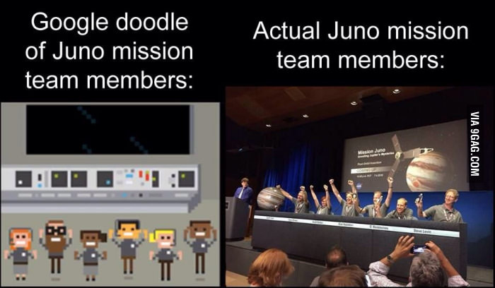
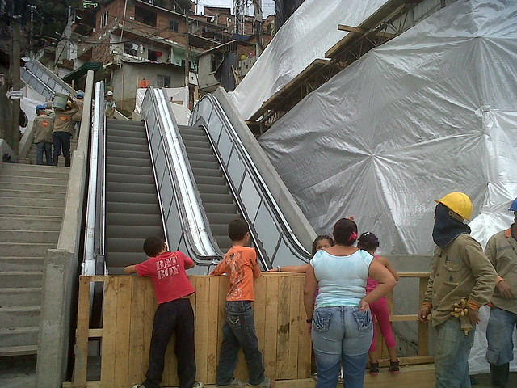
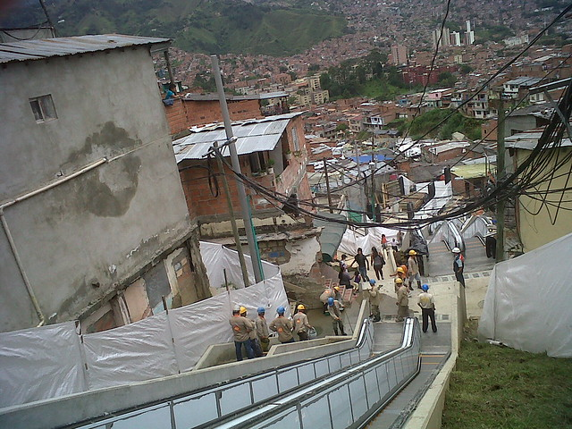
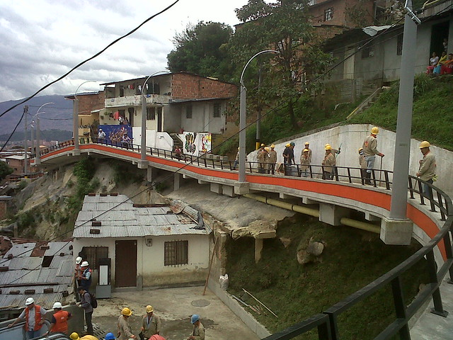
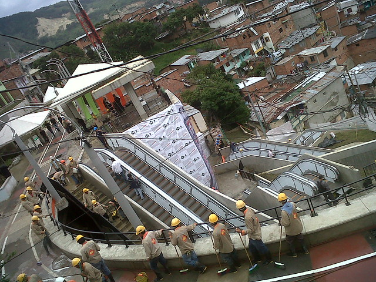
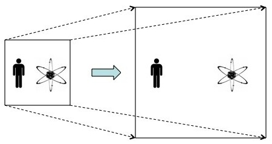
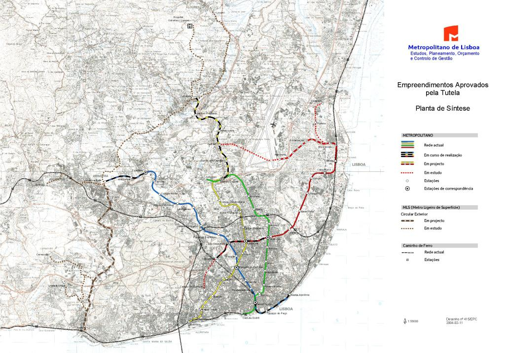
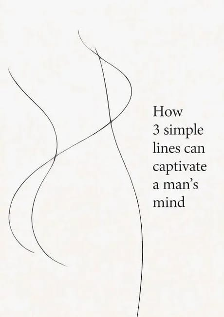
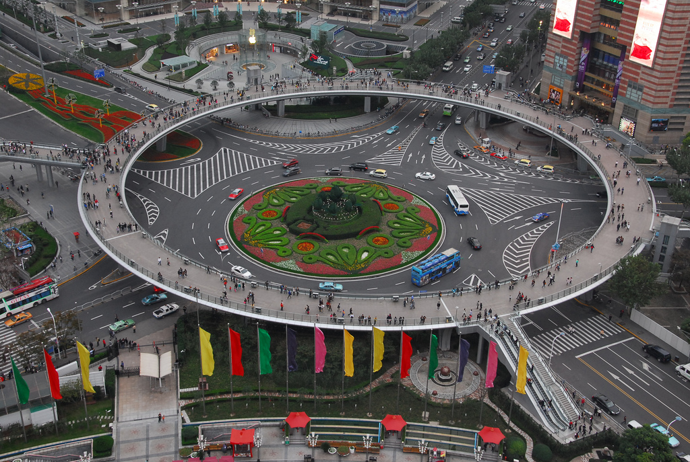

Notes From The Underground - VI
Beauty, in a person, prompts desire.
When our interest is entirely taken up by a thing, as it appears in our perception, and independently of any use to which it might be put, then do we begin to speak of its beauty.
On the other hand, beauty undoubtedly stimulates desire in the moment of arousal.
So is your desire directed at the beauty of the other? Is it a desire to do something with that beauty?
But what can you do with another person's beauty?
The satisfied lover is as little able to possess the beauty of his beloved as the one who hopelessly observes it from afar.
 [Roger Scruton, Beauty (2009)]
[Roger Scruton, Beauty (2009)]
Much that is said about beauty and its importance in our lives ignores the minimal beauty of an unpretentious street, a nice pair of shoes or a tasteful piece of wrapping paper, as though these things belonged to a different order of value from a church by Bramante or a Shakespeare sonnet.
Yet these minimal beauties are far more important to our daily lives, and far more intricately involved in our own rational decisions, than the great works which (if we are lucky) occupy our leisure hours.
They are part of the context in which we live our lives, and our desire for harmony, fittingness and civility is both expressed and confirmed in them.
[Roger Scruton, Beauty (2009)]

 Hugh MacLeod's cartoon is a symbol of an unorthodox school of management based on the axiom that organizations don't suffer pathologies; they are intrinsically pathological constructs.
The Sociopath layer comprises the Darwinian/Protestant Ethic will-to-power types who drive an organization to function despite itself. The Clueless layer is the "Organization Man".
The Losers are not social losers (as in the opposite of "cool"), but people who have struck bad bargains economically, giving up capitalist striving for steady paychecks.
Hugh MacLeod's cartoon is a symbol of an unorthodox school of management based on the axiom that organizations don't suffer pathologies; they are intrinsically pathological constructs.
The Sociopath layer comprises the Darwinian/Protestant Ethic will-to-power types who drive an organization to function despite itself. The Clueless layer is the "Organization Man".
The Losers are not social losers (as in the opposite of "cool"), but people who have struck bad bargains economically, giving up capitalist striving for steady paychecks.
The Sociopaths defeated the Organization Men and turned them into The Clueless not by reforming the organization, but by creating a meta-culture of Darwinism in the economy: one based on job-hopping, mergers, acquisitions, layoffs, cataclysmic reorganizations, outsourcing, unforgiving start-up ecosystems, and brutal corporate raiding.
In this terrifying meta-world of the Titans, the Organization Man became the Clueless Man. MacLeod's Loser layer represent the losers in the economic sense: those who have, for various reasons, made (or been forced to make) a bad economic bargain.
They've given up some potential for long-term economic liberty (as capitalists) for short-term economic stability.
Traded freedom for a paycheck in short. They actually produce, but are not compensated in proportion to the value they create (since their compensation is set by Sociopaths operating under conditions of serious moral hazard).
They mortgage their lives away, and hope to die before their money runs out.
Losers have two ways out: turning Sociopath or turning into bare-minimum performers.
Based on the MacLeod lifecycle, we can also separate the three layers based on the timing of their entry and exit into organizations.
The Sociopaths enter and exit organizations at will, at any stage, and do whatever it takes to come out on top.
The contribute creativity in early stages of a organization's life, neurotic leadership in the middle stages, and cold-bloodedness in the later stages, where they drive decisions like mergers, acquisitions and layoffs that others are too scared or too compassionate to drive.
They are also the ones capable of equally impersonally exploiting a young idea for growth in the beginning, killing one good idea to concentrate resources on another at maturity, and milking an end-of-life idea through harvest-and-exit market strategies.
The Losers like to feel good about their lives.
They are the happiness seekers, rather than will-to-power players, and enter and exit reactively, in response to the meta-Darwinian trends in the economy.
But they have no more loyalty to the firm than the Sociopaths.
They do have a loyalty to individual people, and a commitment to finding fulfillment through work when they can, and coasting when they cannot.
The Clueless are the ones who lack the competence to circulate freely through the economy (unlike Sociopaths and Losers), and build up a perverse sense of loyalty to the firm, even when events make it abundantly clear that the firm is not loyal to them.
To sustain themselves, they must be capable of fashioning elaborate delusions based on idealized notions of the firm.
Unless squeezed out by forces they cannot resist, they hang on as long as possible, long after both Sociopaths and Losers have left.
Venkatesh Rao (2009)
[The Cloud Infrastructure]

Em dois meses, desapareceram 14 dos 31 quadros da exposição "Coming Out", que o Museu Nacional de Arte Antiga espalhou pela Baixa de Lisboa.
O "Retrato do Conde de Farrobo", o "São Damião", o "Retrato do Senhor de Noirmont" e "Conversação" estão entre as réplicas furtadas, mas estas quatro continuam à vista de todos.
Só que agora é preciso atravessar o rio Tejo para vê-las.
"Não é um roubo, é um deslocamento", diz ao Observador um dos autores do desvio.
O quadro mais difícil de furtar não foi o primeiro, o "São Damião" de Bartolomé Bermejo, na Travessa dos Teatros.
"São Damião" tem 1,65 metros de altura.
Os dois rapazes esperaram pelas quatro da manhã e levaram um escadote, porque não chegavam aos parafusos superiores.
"Foi à justa que coube no carro", conta.
O objetivo do furto estava traçado desde o início: colocá-lo perto de casa, num bairro entre o Laranjeiro (Almada) e Miratejo (Seixal).
"Gostámos muito da atividade do museu e achámos que devia ser alargado a outros sítios".
Quem também parece ter gostado foram os moradores do bairro situado junto da Avenida Professor Rui Luís Gomes, que no dia 27 de novembro começaram a reparar na novidade.
"Ninguém tentou levar nem vandalizar, está intacto. Há pessoas que disseram que era o quadro mais bonito que já tinham visto", conta o autor da mudança, que considera que, ali, a pintura "ganha outra magnitude".
Desde que o MNAA começou a exposição já desapareceram 14 réplicas. Pela mão do 'Robin das Artes', não deverá desaparecer mais nenhuma.
"Já passámos a ideia. Até porque já não temos como tirar os outros [risos]".
Como último desejo, gostava que os quatro quadros "levassem gente de fora ao bairro" para os ver, tal como acontece no Chiado.
Observador (2015)

Com o tempo, e ajuda de visionários, irá se perceber que Lisboa não é uma cidade, é uma metrópole.
2013 – Joaquim Santos sublinhou ainda que "precisamos de uma região administrativa eleita, que comande o gestor operacional dos transportes.
Estes gestores operacionais têm que estar subordinados a uma visão política.
E a visão política que falta é a visão regional.
Podia já começar-se pela AML, elegendo pessoas para coordenarem esta área dos transportes."
Transportes em Revista (2013)
2013 – Desenvolvido pelo professor José Manuel Viegas, o sistema tarifário baseado em favos estava assente numa lógica zonal como base tarifária, zonamento esse que subdividia o território em polígonos regulares tornando possível a construção do tarifário a partir de qualquer localidade.
Ou seja, o cliente poderia escolher onde queria circular e pagava apenas o que tinha escolhido. A Área Metropolitana de Lisboa passava a estar dividida em 68 zonas, estando à disposição dos clientes selecionar aquelas que melhor se adaptavam às suas necessidades de mobilidade.
Para José Manuel Viegas, este sistema «é mais simples e mais justo para os clientes, porque o tarifário passa a estar centrado neles».
Transportes em Revista (2013)
2014 – Germano Martins, presidente da Autoridade Metropolitana de Transportes de Lisboa, lembrou que "a Carris e o Metro não são de Lisboa, são da região", sublinhando que é preciso ter isso em conta quando se discute a possibilidade de o município de Lisboa liderado por António Costa assumir a gestão destas empresas.
Publico (2014)
2016 – Bernardino Soares, o presidente da Câmara de Loures rejeita a entrega da Carris e do Metropolitano à câmara de Lisboa, pois tem receio de que tal se traduza num acentuar da tendência para essas empresas não darem resposta fora de Lisboa, sendo que os seus utentes ultrapassam largamente a população do concelho de Lisboa.
Para o autarca, a decisão acertada é confiar a sua gestão a uma entidade supramunicipal em que os municípios participem.
Publico (2016)
 1940, Praça dos Restauradores, Lisboa
1940, Praça dos Restauradores, Lisboa
The problem with being average.
 MIT Technology Review (2013)
MIT Technology Review (2013)
[Profit] Make Profit By Stealing Underpants - South Park
Europeans and Westerners were not prepared for a world increasingly influenced by ideas and ideologies that originated in traditionalist non-Western cultures. Supposedly such cultures would already be modern and secular like the West, if the prophecy of the universal progress of humanity had been fully fulfilled. The European mental framework has already been overcome by reality, but its intellectual persistence is a huge obstacle to understanding the trends that are emerging in the contemporary world. Nowadays it is easy to see that the democratic and pluralist legal-constitutional edifice that was created in Europe was not thinking, nor was it prepared, to face a cultural-social and religious-political contest arising from non-Western ideas and ideologies. The Islamic attacks in recent weeks in France, which targeted both the teacher of a secular republican school (on the outskirts of Paris), and the sacristan and the faithful of a church (in Nice), leave no doubt about the frontal collision route between Islam and the French Republic. The terrain is particularly favorable to Islamists. On the one hand, they exploit the poor knowledge of what is not European and Western, as well as the guilt complexes in Europe due to the recent colonial past, whose wounds have not yet ended. On the other hand, they take advantage of the enormous demographic dynamism and youth of the people from the southern Mediterranean and other parts of the Islamic world. We do not know whether current generations of Europeans, out of indifference, neglect or misperception, will be willing to wage the long cultural, social and political struggles necessary to preserve what has been achieved at the cost of enormous sacrifices and loss of life in the past. José Pedro Teixeira Fernandes (2020) Egyptian President Gamal Adbel Nasser (1966)
Dominant urban theory marginalizes anywhere outside imagined city boundaries as the sub to the urb.
These are not apolitical research cartographies; they are exercises of power, taking care to highlight some elements and leave others out, constructing and ordering what counts.
[Matt Hern (2024)]

Nenhum homem é uma ilha isolada; cada homem é uma partícula do continente, uma parte da terra; se um torrão é arrastado para o mar, a Europa fica diminuída, como se fosse um promontório, como se fosse a casa dos teus amigos ou a tua própria; a morte de qualquer homem diminui-me, porque sou parte do género humano.
E por isso não perguntes por quem os sinos dobram; eles dobram por ti.
[John Donne (1624)]
Foi agredido o motorista de autocarro, homem branco, que chamou a PSP para denunciar a passageira Cláudia Simões, mulher negra, que viajava sem bilhete e que alega depois ter sido depois agredida por polícias.
As agressões ao motorista ocorreram na noite de 24 de Janeiro de 2020, em Massamá, concelho de Sintra, Área Metropolitana de Lisboa, Portugal.

Rebirth Helligaandskirken (2026)
[Erasure]

Channel 4 executives will find their bonus payments cut if they fail to meet radical new diversity targets which require women, black, asian or minority ethnic (BAME) people and the disabled to be given leading roles across all of its programmes.
Channel 4's drama and comedies are required to include at least one lead character from an ethnic minority, LGBT or disabled background and 50 per cent of the lead roles must be female, if no other minority groups feature.
Entertainment shows must also have 25 per cent female on-screen representation as well as a minimum of 15 per cent guests or presenters who are LGBT, ethnic minority, disabled or "another underrepresented group".
The commitments extend to off-screen roles: 15 per cent of the production team in scripted shows should be from an ethnic minority or have a disability.
"It is positive action, not positive discrimination", Channel 4 said.
The new targets would not prevent some good programmes from being commissioned, "We just have to look harder to find talented people from these groups".
The Independent (2015)
We don't need to be friends. We are family. - Stoker (2013)
 Venus, Mercury and Cupid - François Boucher (1742)
Venus, Mercury and Cupid - François Boucher (1742)
Estamos nas vésperas da Revolução: Voltaire não a sonha, mas pressente-a; não a deseja, mas prepara-a.
Entre 2007 e 2016 477 mil pessoas pediram a nacionalidade portuguesa e mais de 400 mil cidadãos tornaram-se portugueses.
Entre os países da União Europeia, Portugal vem em segundo lugar no "rácio de aquisições de nacionalidade por total de residentes estrangeiros", logo a seguir à Suécia. As alterações legislativas para a concessão da nacionalidade feitas nas duas últimas décadas muito contribuíram para tal.
As políticas e enquadramentos legais portuguesas têm sido consideradas inovadoras ao conciliar critérios de nascimento, descendência, residência, a opção voluntária para o pedido de nacionalidade e o papel que os imigrantes requerentes podem assumir para a demografia de um país naturalmente envelhecido.
No ano de 1996 houve 3700 concessões de nacionalidade portuguesa mas em 2016 esse número ascendeu a 50.793 de acordo com o Observatório das Migrações.
Público (2017)
Nasci em Portugal. Educaram-me a História de Portugal. Falo Português.
Tenho um cartão de cidadão e um passaporte que dizem que eu sou Português. Mas isso basta?
Que Cultura, História, Valores, Moral, partilho com os meus concidadãos, novos e antigos?
Não os conheço, eles não me conhecem. Devo Ser como eles ou eles Serem como eu?
Ambos somos Portugueses, mas quem define o que é a Portugalidade?
A nação foi descredibilizada em termos intelectuais e políticos, especialmente a partir dos anos 1980.
Não era uma comunidade com genuína existência real. Era uma mera construção social, uma "comunidade imaginada".
A sua dissolução em sociedades multiculturais, o mais possível diversas, tornou-se o novo ideal de perfeição e modelo de coexistência pacífica no Ocidente europeu.
Não é um processo linear e contínuo, mas é a tendência que marca a transformação social e política da Europa no longo prazo.
O mais complexo é a crescente heterogeneidade de Estados e sociedades que, num passado recente, eram bastante homogéneos em termos de grupo nacional.
O afrouxamento dos laços nacionais deixou fundamentalmente um espaço vazio.
Poucos se sentem genuinamente unidos por um europeísmo ou cosmopolitismo.
Menos ainda estariam dispostos a sacrificar a sua vida por tais ideais.
No território das grandes nações europeias surgiram então novos grupos culturais frequentemente acantonados em guetos, de dimensão e número (ainda) desconhecido.
É algo demasiado evidente nas grandes metrópoles europeias: populações que se ignoram, ou conflituam culturalmente, pois não partilham os valores mais profundos que alicerçam a cidadania.
José Pedro Teixeira Fernandes (2017)
Mas o que é Tudo, no final, é Nada.
Street escalator installed in the Colombian city of Medellín.
SkyscraperCity (2011)
   
How can we see something from the origin of the universe?
If light was emitted from that origin, it would travel out from it at the speed of light.
Our Earth would evolve billions of years later, meaning the light of the big bang has long since passed us by.
The big bang didn't happen at a single point in our universe but throughout all of space, which was at that time contracted to a single point.
Therefore, light is not traveling "outward" from a single "center" but rather from all of space.

O metro ligeiro de superfície Algés – Falagueira é um meio de transporte mais rápido e com um orçamento menos elevado na sua construção do que o metro subterrâneo actualmente explorado em Lisboa.
A nova infra-estrutura visa reforçar a mobilidade na área ocidental da Grande Lisboa pelo que contempla ligações com as linhas ferroviárias de Cascais e de Sintra.
A ligação ao Metropolitano será igualmente possível, na Falagueira.
A linha Algés – Falagueira contempla 15 paragens: Algés (interface com a estação da CP), Algés-Centro, Algés-Norte, Algés-Miraflores, Miraflores, Outurela, Quinta do Paizinho, Bairro do Zambujal, Alfragide, Alfragide/IC19, Damaia, Damaia (interface com a estação da CP), Venda Nova, Venda Nova Norte, Falagueira (interface com a linha azul do Metro).
A distância média entre cada paragem é de 530 metros e o tempo de viagem será de cerca de vinte minutos.
O investimento global no metro ligeiro de superfície que irá ligar os concelhos de Oeiras e Amadora está inicialmente orçado em 232 milhões de euros.
O metro irá contar com corredores próprios o que irá obrigar a uma reconversão urbana.
Com o objectivo de ser criada uma circular periférica de metro ligeiro de superfície em torno de Lisboa, concluída esta etapa do projecto, a segunda fase compreende a ligação entre Falagueira, Odivelas e Loures.
Correio da Manhã (2004)

Trajectórias Residenciais é um projeto de uma equipa de investigadores do ISCTE que procura aprofundar o conhecimento sobre as trajetórias residenciais da população que reside ou já residiu na Área Metropolitana de Lisboa. Em Portugal, o processo de urbanização, que tem início na década de 50, atinge o seu auge na década seguinte, entrando pelos "conturbados" anos 70. Era nas periferias ou nos limites periféricos da cidade que se construíam os "novos bairros", de habitação colectiva ou de moradias, frequentemente clandestinas. A periferização é pois, aqui e em qualquer parte de mundo, uma inevitabilidade da constituição da própria metrópole, a condição sine qua non à expansão territorial e humana que a caracteriza. Num lento processo de "contágio" social que se vai expandido ao ritmo das transformações sócio-culturais, a palavra periferia ganha um tom valorativo, leia-se depreciativo, mais do que designativo. Hoje, o enaltecimento da urbanidade por oposição à suburbanidade é o referencial dominante entre quem pensa, faz e gere a cidade. A absolutização deste referencial, ao dispensar análises mais ligadas às práticas e subjetividades individuais, alimenta um discurso em torno das lógicas de ocupação do espaço metropolitano que se esgota em 2 argumentos, entendidos como constrangimentos estruturais impostos pela oferta: i) as pessoas terão sido forçadas a sair da cidade; ii) e nela não residem, nomeadamente no centro, "apenas" porque não podem. Trajectórias Residenciais (2013)
[Amadora, Escola de Campeões] (2015)
Transformational Leadership: Vision, Inspirational Communication, Intellectual Stimulation, Supportive Leadership, Personal Recognition
Transformational Leadership is predictive of lean product development capabilities (working in small batches, team experimentation, gathering and implementing customer feedback) and technical practices (test automation, deployment automation, trunk-based development, shift left on security, loosely coupled architecture, empowered teams, continuous integration).
[Accelerate (2018)]
[Male Neural Activation]

A striking event was the way in which Premier League footballers, reopening the season in empty stadiums, wore shirts emblazoned with the slogan of the new universal Left, 'Black Lives Matter'. All, along with the referee and match officials, also 'took the knee', the sign of obeisance to the new ideology. As far as I know, none of those involved had any qualms about this. But if they had done, would they have dared express them, if they wished to continue in professional football? Would the world have praised their conscientious courage, or would they have been hosed down with claims that they were 'racists' and then 'cancelled'? You know the answer as you ask the question. Who doesn't think black lives matter? But that is not what these displays mean. They are about particular ways of holding those views, ways which lead relentlessly to intolerance of dissent, to the enforcement – by threats to the livelihoods of dissenters – of a single set of acceptable opinions. And it is not enough to keep quiet. If you are suspected of thinking the wrong thing, they will come and cancel you anyway. I now think this is just a matter of time. Prepare to be cancelled. Peter Hitchens (2020)
[The Lebenswelt]
To describe the "order of nature" in terms of some complete and unified science is to give a systematic answer to the question "what exists?"
But the world can be known in another way.
The world known in this other way will be an "emergent" world, represented in the cognitive apparatus of the perceiver, but emerging from the physical reality, as the face emerges from the pigments on the canvas, or the melody from the sequence of pitched sounds.
The relation of emergence is nonsymmetrical.
The order of nature does not emerge from the Lebenswelt; its existence is presupposed by the Lebenswelt, but not vice versa.
Someone who wished to design a machine capable of delivering a Beethoven's concerto to the ear would be helped by an analysis of the pitches and their duration.
He could transcribe this analysis into a suitable digital notation and use the result to program a device capable of producing pitched sounds in sequence.
The reductivist would argue that therefore the music is nothing but the sequence of pitched sounds, since if you reproduce the sequence, you reproduce the music.
Sure, the music depends upon, is emergent from, the sequence of sounds. The sounds are "ontologically prior." But to hear the music it is not enough to notice the sounds.
Music is inaudible, except to those with the cognitive capacity to hear movement in musical space, orientation, tension and release, the gravitational force of the bass notes, and so on.
Music is certainly part of the real world. But it is perceivable only to those who are able to conceptualize and respond to sound in ways that have no part to play in the physical science of acoustics.
Again we have a useful parallel in the study of pictures.
There is no way in which we could, by peering hard at the face in Botticelli's Venus, recuperate a chemical breakdown of the pigments used to compose it.
Of course, if we peer hard at the canvas and the substances smeared on it, we can reach an understanding of its chemistry.
But then we are not peering at the face – not even seeing it.
I don't want to say that I am something other than this biological organism that stands before you.
This here thing is what I am.
In describing a sequence of sounds as a melody, I am situating the sequence in the human world: the world of our responses, intentions, and self-knowledge.
I am lifting the sounds out of the physical realm, and repositioning them in the Lebenswelt, which is a world of freedom, reason and interpersonal being.
But I am not describing something other than the sounds, or implying that there is something hiding behind the sounds, some inner "self" or essence that reveals itself to itself in some way inaccessible to me.
I am describing what I hear in the sounds, when I respond to them as music.
I situate the human organism in the Lebenswelt; and in doing so I use another language, and with other intentions, than those that apply in the biological sciences.
[The Soul of the World (2014), Roger Scruton]
[Lujiazui Circular Pedestrian Bridge, Shanghai, China]
